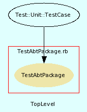

|  |
testabtpackage.rb
Unit testing for AbtPackage class.
Created by Eric D. Schabell <erics@abtlinux.org> Copyright 2006, GPL.
This file is part of AbTLinux.
AbTLinux is free software; you can redistribute it and/or modify it under the terms of the GNU General Public License as published by the Free Software Foundation; either version 2 of the License, or (at your option) any later version.
AbTLinux is distributed in the hope that it will be useful, but WITHOUT ANY WARRANTY; without even the implied warranty of MERCHANTABILITY or FITNESS FOR A PARTICULAR PURPOSE. See the GNU General Public License for more details.
You should have received a copy of the GNU General Public License along with AbTLinux; if not, write to the Free Software Foundation, Inc., 51 Franklin St, Fifth Floor, Boston, MA 02110-1301 USA
- setup
- teardown
- test_build
- test_configure
- test_details
- test_install
- test_post
- test_pre
- test_preinstall
setup method for testing AbtPackage.
[ show source ]
# File testabtpackage.rb, line 50
50: def setup
51: @ipc = Ipc.new
52: end
teardown method to cleanup after testing.
[ show source ]
# File testabtpackage.rb, line 57
57: def teardown
58: end
Test method for ‘AbtPackage.test_build()’
[ show source ]
# File testabtpackage.rb, line 91
91: def test_build
92: if ( !@ipc.pre( $verbose ) )
93: assert_equals( true, false, "test_build(pre)" )
94: end
95: if ( !@ipc.configure( $verbose ) )
96: assert_equals( true, false, "test_build(configure)" )
97: end
98: assert( @ipc.build( $verbose ), "test_build(build)" )
99: end
Test method for ‘AbtPackage.test_configure()’
[ show source ]
# File testabtpackage.rb, line 81
81: def test_configure
82: if ( !@ipc.pre( $verbose ) )
83: assert_equals( true, false, "test_configure(pre)" )
84: end
85: assert( @ipc.configure( $verbose ), "test_configure(configure)" )
86: end
Test method for ‘AbtPackage.test_details()’
[ show source ]
# File testabtpackage.rb, line 63
63: def test_details
64: assert_equal( $dataTest['name'], @ipc.details['Package name'], "test_details(name)" )
65: assert_equal( $dataTest['execName'], @ipc.details['Executable'], "test_details(execName)" )
66: assert_equal( $dataTest['version'], @ipc.details['Version'], "test_details(version)" )
67: assert_equal( $dataTest['srcDir'], @ipc.details['Source location'], "test_details(srcDir)" )
68: assert_equal( $dataTest['homepage'], @ipc.details['Homepage'], "test_details(homepage)" )
69: end
Test method for ‘AbtPackage.test_install()’
[ show source ]
# File testabtpackage.rb, line 111
111: def test_install
112:
113: if ( !@ipc.pre( $verbose ) )
114: assert_equals( true, false, "test_install(pre)" )
115: end
116: if ( !@ipc.configure( $verbose ) )
117: assert_equals( true, false, "test_install(configure)" )
118: end
119: if ( !@ipc.build( $verbose ) )
120: assert_equals( true, false, "test_install(build)" )
121: end
122: if ( !@ipc.preinstall( $verbose ) )
123: assert_equals( true, false, "test_install(install)" )
124: end
125: assert( @ipc.install( $verbose ), "test_install(install)" )
126: end
Test method for ‘AbtPackage.test_post()’
[ show source ]
# File testabtpackage.rb, line 131
131: def test_post
132: assert_equals( true, false, "test_post(pre)" ) if ( !@ipc.pre( $verbose ) )
133: assert_equals( true, false, "test_post(configure)" ) if ( !@ipc.configure( $verbose ) )
134: assert_equals( true, false, "test_post(build)" ) if ( !@ipc.build( $verbose ) )
135: assert_equals( true, false, "test_post(preinstall)" ) if ( !@ipc.preinstall( $verbose ) )
136: assert_equals( true, false, "test_post(install)" ) if ( !@ipc.install( $verbose ) )
137: assert( @ipc.post( $verbose ), "test_post(post)" )
138: end
Test method for ‘AbtPackage.test_pre()’
[ show source ]
# File testabtpackage.rb, line 74
74: def test_pre
75: assert( @ipc.pre( $verbose ), "test_pre()" )
76: end
Test method for ‘AbtPackage.test_preinstall()’
[ show source ]
# File testabtpackage.rb, line 104
104: def test_preinstall
105: assert( @ipc.preinstall( $verbose ), "test_preinstall()" )
106: end